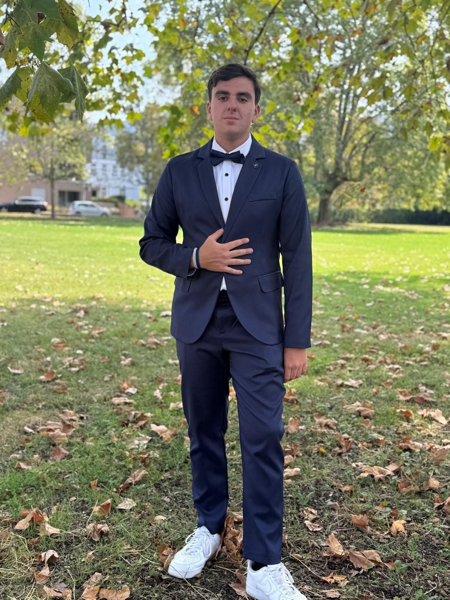

Empreinte carbone
Prototype web et mobile conçu en équipe pour analyser l’empreinte carbone de sites à partir de données ADEME. Un défi proposé par Capgemini au hackathon Sup de Vinci.
Découvrir le projet↗COORDINATEUR DE PROJETS IT · FONDATEUR DE NEXSECURE
Coordinateur de projets IT et fondateur de NexSecure ↗, je relie les besoins métiers à la technique : cybersécurité, automatisation, développement et data.

01 / EN LUMIÈRE
Prototype web et mobile conçu en équipe pour analyser l’empreinte carbone de sites à partir de données ADEME. Un défi proposé par Capgemini au hackathon Sup de Vinci.
Découvrir le projet↗Développement d’une application de gestion de la relation client en HTML, CSS, PHP et JavaScript.
Un système de Secret Santa développé dans le cadre de mon alternance pour organiser un échange de cadeaux entre collègues.
MON ENTREPRISE
Des solutions numériques
pour les besoins du terrain.
Avec NexSecure, j’accompagne les entreprises dans la création de sites web et d’applications métier, l’automatisation de leurs processus et la sécurisation de leur informatique.
DE LA CURIOSITÉ À LA PRATIQUE
Des projets concrets, une veille régulière et le goût de l’expérimentation. J’apprends en construisant, en échangeant et en testant.
Ouvrir mon journal de veille ↗03 / COMPÉTENCES
Cadrer un projet, automatiser un processus, sécuriser les accès ou exploiter les données : une approche technique au service des usages.
Découvrir mon parcours ↗Laravel · Node.js · TypeScript · APIs
Power Apps · Power Automate · Python · PowerShell
SQL · Snowflake · Power BI
Entra ID · MFA/SSO · Microsoft 365 · Cloudflare
Mes expériences en entreprise et les projets auxquels j’ai contribué.
05 / FORMATIONSMon parcours de formation, mes diplômes et mes certifications.
06 / CURIOSITÉDéveloppement web, outils, IA et cloud : une veille actualisée automatiquement.